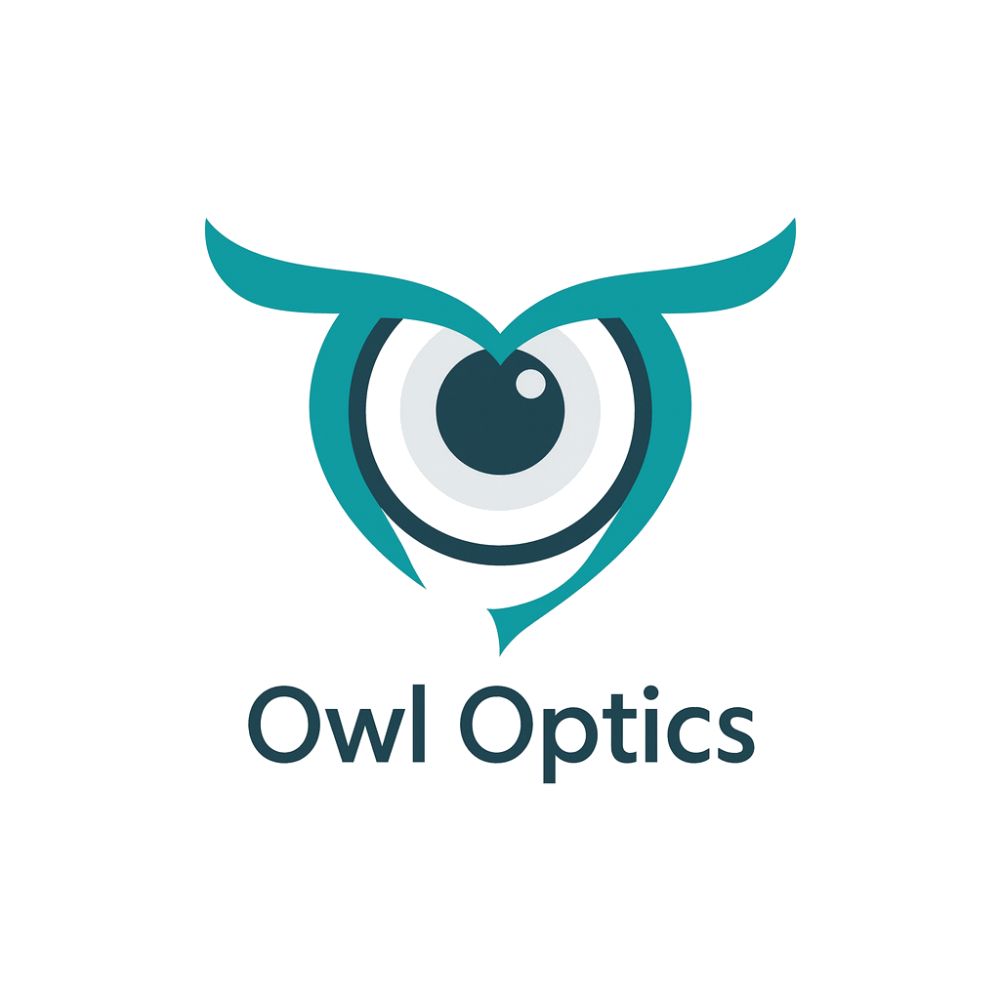
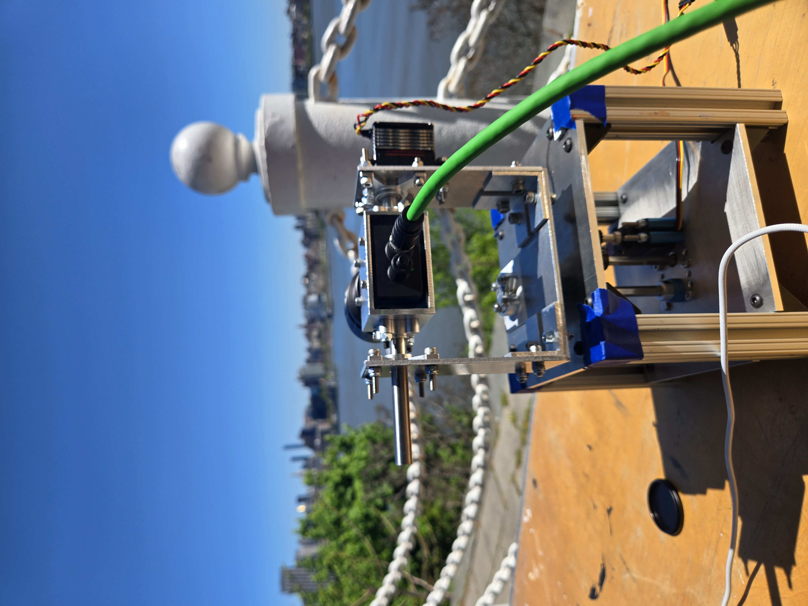
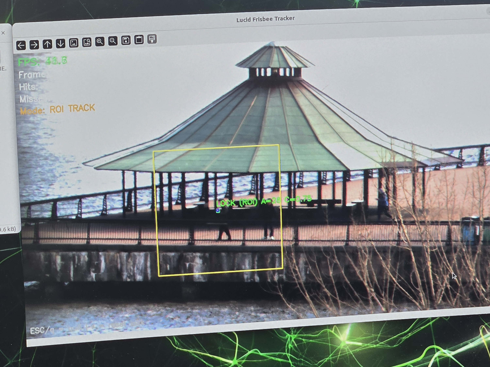
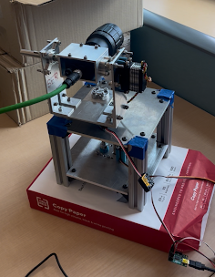

Sponsored by Siemens



This project focuses on the design and development of a compact, lightweight gimbaled optical sensor system capable of tracking a 25 centimeter target at a distance of 1 kilometer. The system integrates computer vision tracking, precise motor control, and optimized power usage to achieve accurate long-range performance in a compact form factor.
Our mission is to engineer a compact and power-efficient gimbaled optical sensor system capable of high-precision long-range tracking, while minimizing the size, weight, power, and cost constraints associated with conventional systems.

A quick look at the development path leading to the final prototype.
The Alpha Prototype displayed our initial proof of concept for the GOS.
The Beta Prototype represents the first fully integrated system, combining hardware and software.


Add photos and videos here to document testing, build progress, and live demonstrations.
Handled circuit design and implementation, and powering the overall system. Developed team website.
Responsible for our computer vision algorithms, full system integration.
Responsible for mechanical design and assembly.
Responsible for mechanical design and assembly.
Responsible for mechanical design and assembly.

Responsible for mechanical design and assembly.